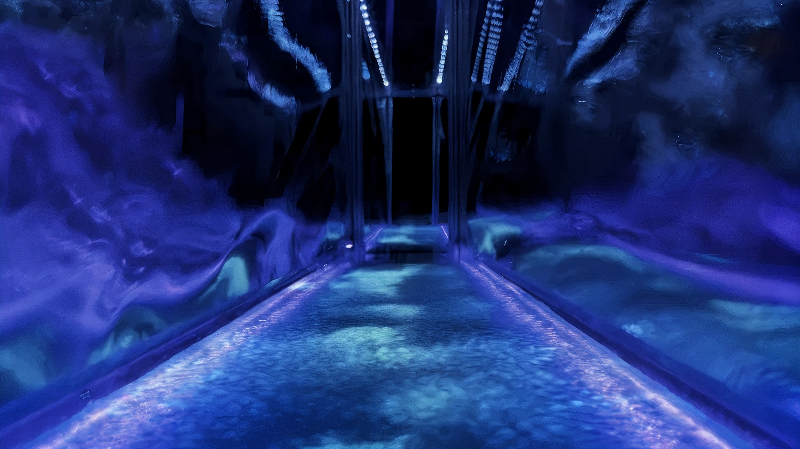

Artwork
Whispering Water
People have long whispered to water. Wishes offered to sacred wells, Japanese misogi purification chants, Greek hydromancy, and the Daoist view of water as receptive yet powerful all treat water as a listener: it receives vulnerability, answers through subtle material change, and returns to stillness without judgment. Whispering Water brings this gesture into our conversations with machines, materializing dialogue between humans and AI as cymatic patterns on water. A participant leans into an intimate mirrored tunnel and confesses to the water surface. The exchange unfolds as a ritual in four phases: confession, contemplation, response, and release. The emotional quality of the voice primes the water first, setting a standing wave at a matching frequency. The words then enter a conversation among six AI agents built on different language models, who answer the participant and one another, converging and diverging before a single voice offers a final reflection. Each agent's synthesized speech is decomposed into low frequency components and played through six subwoofers coupled to the vessel, so voices become waves that overlap and interfere across the surface, revealed by ultraviolet light. As the vibration fades, the water returns to stillness and every recording is deleted. Instead of legible text, the machine answers through the physics of a material the body already knows as receptive. Whispering Water asks how ritual, materiality, and machine dialogue might open sensory forms of emotional reflection, leaving visitors free to read the patterns as emotional echo, machine activity, or pure form.

Whispering Water. View down the tank, where synthesized AI voices become low frequency waves interfering across the UV lit water surface.